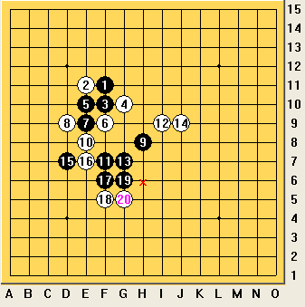
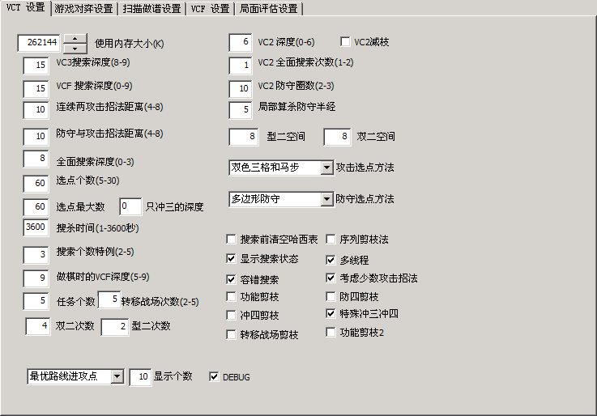

我自己的终结者设置和浅度理解（二）
#1 我自己的终结者设置和浅度理解（二） 作者：陶涛业余 发表时间：2011-10-24 21:32:28
特此更正：前一个帖子我写的是“深度理解”，我觉得不合适，于是改成了“浅度理解”，因为有朋友说软件开发者的的理解才是深度理解，我深表同意。
发帖超过三个小时居然就不能编辑了~~~还没有写完呢，还有要说的话呢，没办法，只能在这里再开一个贴，承前，欢迎大家有问题及时批评斧正！！！
首先必须强调声明几点：有的朋友说算杀不够猛，原因是有如下几点：①光VCT设置了还不够，后面的别的设置还要作相应的调整 ②计算机的处理器不够快是可能的原因 ③如果当前局面根本没有杀，用终结者算杀当然不可能解出来，终结者只是解题、搜索程序，它不是人工智能 ④软件的实力最多只有三段，原因是软件不会做棋，只有人会做棋，你想用软件帮你做棋谱，必须使用者有很强的拓展势力的能力和丰富的棋谱知识。真正的高手下棋是不需要软件的，因为软件只是算杀工具，做棋水平并不如人。所以务必请大家认清软件的真实实力，合理使用软件，先提高自己的水平方可以人软结合，这样才能做出有效的研究 ⑤对于软件仍然存在错杀漏杀等问题，我猜测可能是局面评估的分数表有待进一步微调，笔者正在研究相关问题，敬请期待。
关于VCT的设置中的剪枝，我询问了作者后得知，剪枝算法的目的是避免冗余的计算或者排除可能性很小的杀点，但是剪枝算法毕竟排除了一些可能是杀的位置，

比如说这个局面（天狗道场的黑先胜，不管走子顺序）下一步的杀难度很大，涉及到了战场转移、特殊冲四、在型二空间小的地方选点、跳冲、解禁手，在我去掉所有剪枝之后才完成了快速算杀，否则根本算不出杀。你不妨用你的终结者试一下，如果你回复准确算杀设置这个局面用终结者黑杀不了，根据我的设置相应改了，并且去掉剪枝算法以后，这个局面1秒可杀，不少类似的局面也是如此的情况。
显示个数和debug 是在调试程序选点和更改分数时配合招法排序用的，先暂时不讲解，待我将选点分数表弄透，自己有能力作调整的时候再发表。
上图

VCT说完了，说下面一个：
二、扫描做谱设置
这个是棋友们用的最多的功能了，遇到一个局面，先不管三七二十一扫一下进攻（F5），再不管三七二十一扫一下防守（F7），进攻在前面第一条VCT中说的比较明白了，这里扫描防守也一样重要。扫进攻半天也不见一个“a”，扫防守效果可是立竿见影的，马上就会有c出现。
扫描做谱算防守的原理我是这样理解的：在每一个局面下首先进行选点，选择防守点的规则若VCT中是多边形防守，三圈，则选点就是三圈防守。软件从得分高的点开始，计算已经在强点落下一枚当前子以后，对方的杀，这样只要算啥设置准确，防守漏杀就不容易了。即使漏杀了，也是因为扫描杀的时间太短，假设应该在7秒内算出杀的局面，你设置只给5秒，它当然不行，漏杀以后，再返回来逐一做棋补杀，或者软件补杀就可以解决。
每个局面搜索时间：指的是每个防守点落下以后计算对方杀的时间，这个时间越长就会自动解决越多的点，例如对于一个常见的花月局的黑11，如果设置时间1000毫秒，就会留下白点，说明有些局面在一秒钟之内无法算出13手的杀，但是当时间设置成10000毫秒，结果就地毯了。我在一般扫描时，设置改时间值为5000毫秒，但是当我想挂机扫描（比如说扫描时，出去吃顿饭），我就把扫描时间设成30000毫秒，这样一顿饭吃完，一般只剩下少数防守，然后专心研究这些防守的应招吧。
自动解题攻击点个数：这个和VCT中的进攻选点的意思是一样的，我就不重复解释了，设为60比较保险。
备份文件个数，一个就够了，每次更新棋谱以后，就会在棋谱相同目录下产生一个同名后缀为.bak000的文件，那就是备份的上次保存文件，如果想要回来，将原来.lib的文件删了，将同名备份文件后缀改为.lib就行了。
在VCT中设置多线程以后，在这里的“最大线程个数”就可以开始设置了，看你的计算机是几核的，你就设置线程数为计算机核心数的两倍，过大过小都不利于计算机很好的分配系统资源。
在左侧做谱的一些选项里面我只选择了使用同型标记、冲三冲四自动防守和借用提示着法，我注意到当选择了扫描
#2 Re:我自己的终结者设置和浅度理解（二） 作者：极地剑客 发表时间：2011-10-25 8:02:39
比较好奇的是楼主竟然没有勾选搜索前清空希哈表［ 陶涛业余 于 2011-10-25 8:12:35 时花20金币送鲜花一朵］
#3 Re:Re:我自己的终结者设置和浅度理解（二） 作者：陶涛业余 发表时间：2011-10-25 8:07:01
引用：因为感觉程序好像是在每次搜索前都会自动清空哈希表，我原本的想法是如果一直在研究同样的局面，这样可能就不需要清空哈希表了，因为节省了重复搜索的时间，但是实际上是不是像我所想的那样，还得咨询终结者之父。
原文由 极地剑客 发表于 2011-10-25 8:02:39 :
比较好奇的是楼主竟然没有勾选搜索前清空希哈表
［此帖子已被 陶涛业余 在 2011-10-25 8:12:06 编辑过］
#4 Re:我自己的终结者设置和浅度理解（二） 作者：极地剑客 发表时间：2011-12-10 22:44:14
2个月过去了~坐等07.08版解说#5 Re:Re:我自己的终结者设置和浅度理解（二） 作者：陶涛业余 发表时间：2011-12-17 17:08:55
引用：
原文由 极地剑客 发表于 2011-12-10 22:44:14 :
2个月过去了~坐等07.08版解说
谢谢您的关注，实情是这样的，我又回到了感觉我完全没有理解终结者的状态。
正因为如此，我想重新审视这个程序，重新调整最佳设置，但是至今都没有研究出我满意的状态，我还是感觉人比终结者厉害啊，终结算不出来的棋，高飞老师一眼就出来了（别的高手也是一样）
现在我对终结者仍然在不断的学习中，代价啊（目算求杀出了问题。。。做棋受到了影响。。。）正在郁闷中。。。
请您耐心等待吧
#6 Re:我自己的终结者设置和浅度理解（二） 作者：极地剑客 发表时间：2012-5-30 3:05:43
半年过去了，楼主失踪了#7 Re:我自己的终结者设置和浅度理解（二） 作者：梦婷 发表时间：2012-5-30 7:32:25
 LS帅哥 怎么着大半夜起来想终结者啊～～
LS帅哥 怎么着大半夜起来想终结者啊～～
#8 Re:梦婷【==Re:我自己的终结者设置和浅度理解（二）==】 作者：极地剑客 发表时间：2012-5-30 16:52:05
无聊撒～mm#9 Re:极地剑客【==Re:我自己的终结者设置和浅度理解（二）==】 作者：陶涛业余 发表时间：2012-10-28 21:45:23
引用：明年继续写我的理解和设置。。。
原文由 极地剑客 发表于 2012-5-30 3:05:43 :
半年过去了，楼主失踪了
#10 Re:我自己的终结者设置和浅度理解（二） 作者：草儿要出头 发表时间：2013-5-2 10:09:50
vc3 ，vc4设设置大点！根据局面设置！